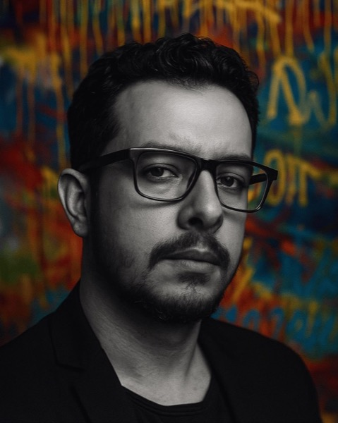

Sou Anderson Brito, editor de vídeo com 10+ anos de audiovisual e Marketing pela FGV. Já faço exatamente o que a Lunar pede: vídeo para redes, peças institucionais, cobertura de eventos, motion design e IA aplicada na edição.
Falar comigo no WhatsApp →
"Bomba Atômica": roteiro, geração de cenas, direção e edição feitos por mim. Nada foi filmado. É o tipo de peça que, com IA, sai em dias e não em semanas, e que eu levo para qualquer cliente da Lunar: do institucional ao agro.
O que a vaga pede, já entregue para marcas reais.
Rede de alimentação saudável, cliente da Escola do Franchising. Evento virando conteúdo para as redes.
Ação na praia com marca parceira, editada com narração e tipografia animada. Feito na WooB.
Montagem acelerada com IA e acabamento no Premiere, para as redes da agência.
O fundador encontra a versão jovem de si mesmo. Voz clonada e cenas geradas por IA.
Edição de vídeos para redes e criativos de tráfego da agência e dos seus clientes, com motion design e IA generativa (personagens, cenas e narração).
Grupo A Trinca (Flávio Augusto, Joel Jota e Caio Carneiro). Criativos, Reels, videoaulas e cobertura de eventos para cerca de 200 franqueados, como Boali e Cheirin Bão.
Conteúdo com IA generativa para as redes, do roteiro à publicação. Memes com o XABLAU passaram de 2,7 milhões de views em um mês.
Redes sociais e site do Vice-Presidente, material para palestras, entrevistas e audiências públicas. Comunicação institucional de alto nível.